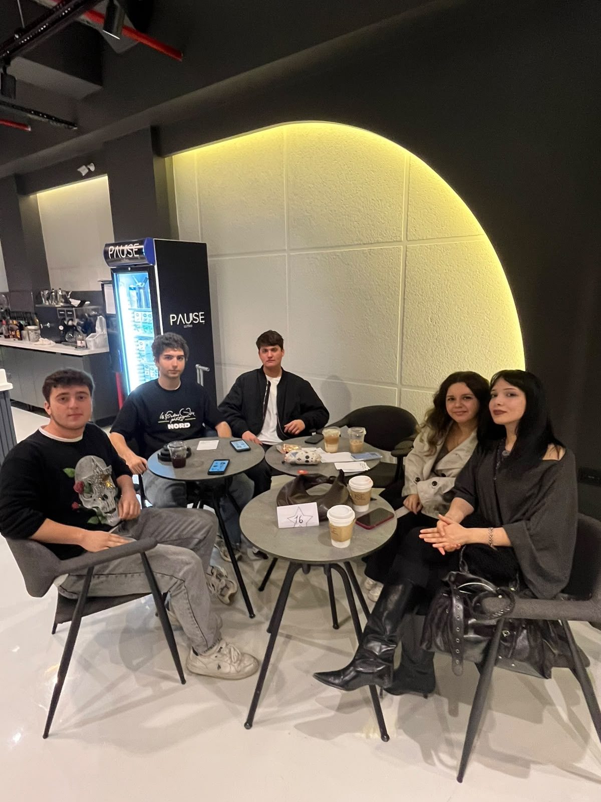
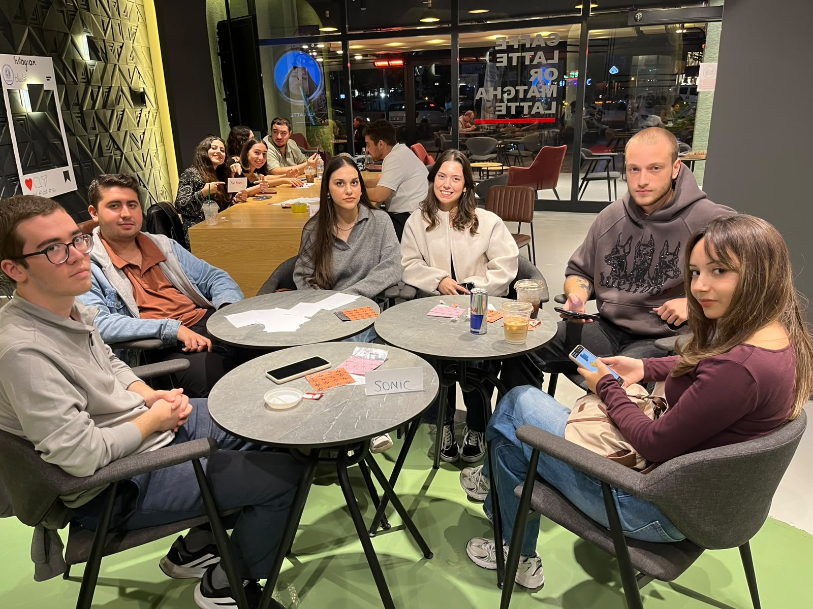
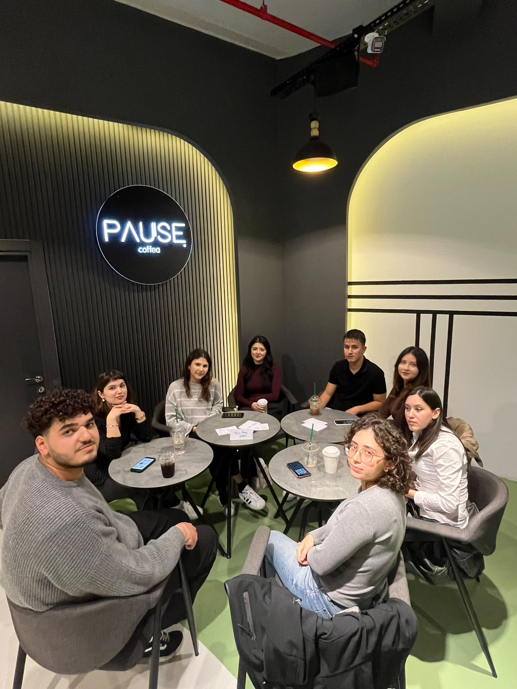
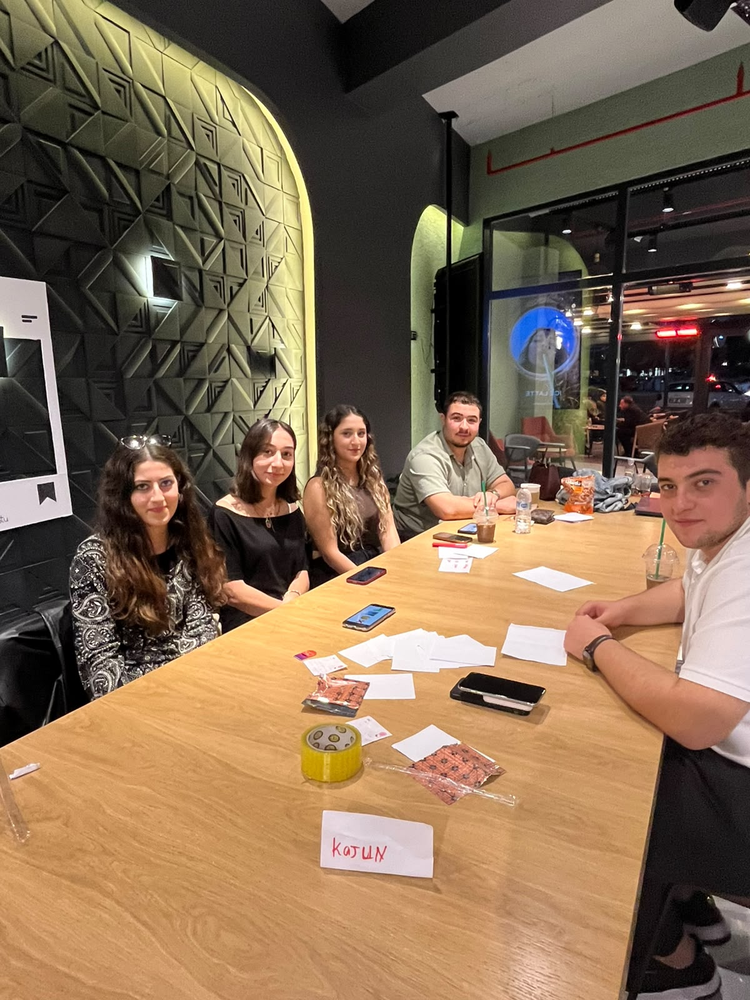
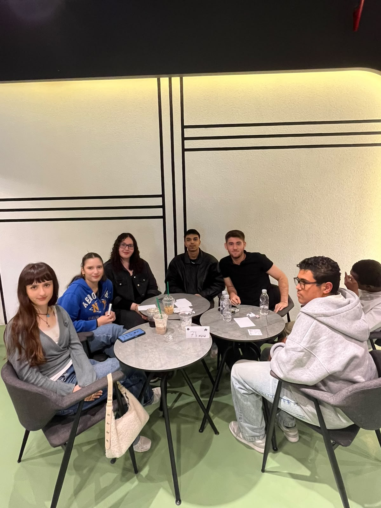
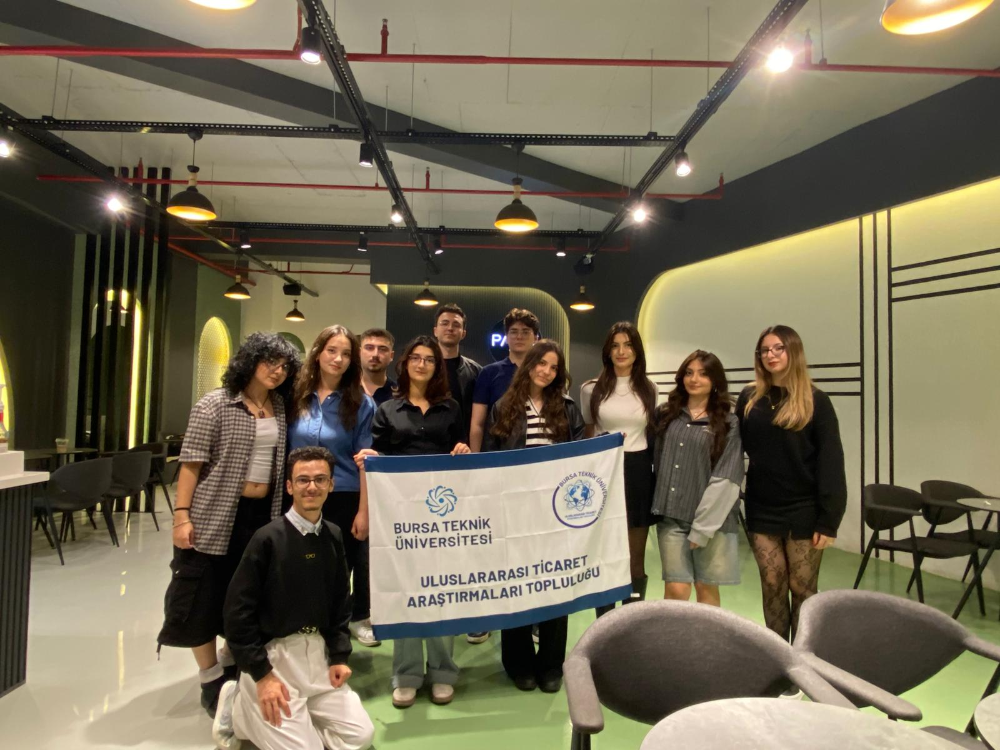

Bursa Teknik Üniversitesi Uluslararası Ticaret Topluluğu (BTÜ UTAT), yeni akademik dönemin heyecanını ve enerjisini düzenlenen büyük tanışma etkinliğiyle başlattı. Üyelerin ve davetlilerin yoğun katılım gösterdiği organizasyon, yeni dönemin ilk unutulmaz anılarına ev sahipliği yaptı.
BURSA - Kampüste birlik ve beraberlik ruhunu pekiştirmeyi hedefleyen topluluğumuz, yeni döneme son derece yüksek bir tempoyla damga vurdu. Etkinlik kapsamında topluluğun vizyonu paylaşıldı, davetliler ve yeni üyeler birbirlerini tanıma fırsatı buldu.
5 Farklı Grupla Tatlı Rekabet ve Yüksek Enerji
Katılımcıların kendilerini tanıttığı interaktif açılış bölümünün ardından eğlenceli ve hareketli oyun akışına geçildi. Oluşturulan 5 ayrı yarışma grubu, tatlı bir rekabet ve yüksek enerjiyle oyunlarda kıyasıya mücadele etti. Ekip ruhunu pekiştiren bu oyunlar sayesinde tüm üyeler kısa sürede kaynaşarak harika bir sinerji yakaladı.





İnteraktif oyun akışımızda kıyasıya yarışan 5 ekibimiz ve geceye damga vuran enerjileri.
"Geleceğe Birlikte Yön Veriyoruz"
Sohbet ve muhabbet eşliğinde kahkahaların eksik olmadığı gecede, üyelerimiz hem eğlendi hem de yeni dönemde birlikte imza atacakları projelerin temellerini attı.
Yeni Dönem Yönetim Kurulu Sahnedeydi
Etkinliğin kapanışında ise yeni dönem yönetim kurulumuz sahne alarak kendilerini tanıttı. Yıl boyunca gerçekleştirilecek vizyoner projeleri ve çalışma planlarını paylaşan yönetim kurulumuz, yeni dönemin getireceği heyecan ve hedefleri üyelerimizle paylaştı.

26-27 Dönemi Yönetim Kurulumuz
Etkinliğimize katılan, enerjisi ve neşesiyle ortamı güzelleştiren tüm üyelerimize ve değerli davetlilerimize yürekten teşekkür ederiz. BTÜ UTAT ile yeni dönemde birlikte öğrenmeye, üretmeye ve büyümeye devam ediyoruz!